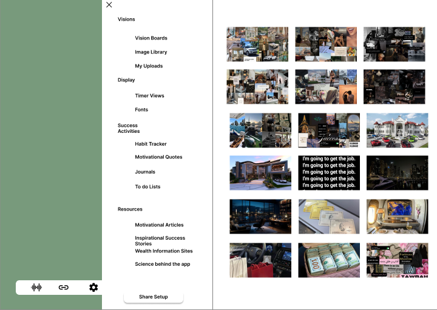
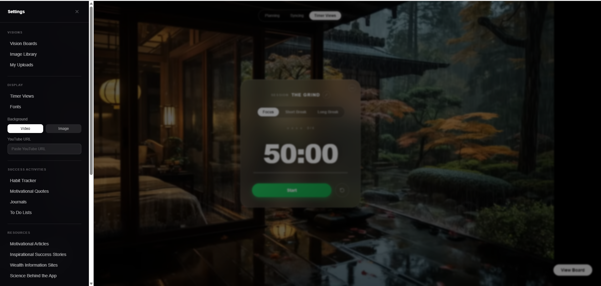

End-to-End Product Design · Design Engineering
VisiPomo
A vision board meets productivity tool — designed to keep you focused and reminded of why you work. Researched, designed, and vibe-coded into a live web app.
End-to-End Product Design · Design Engineering
A vision board meets productivity tool — designed to keep you focused and reminded of why you work. Researched, designed, and vibe-coded into a live web app.
01 — Problem
Before building anything, I challenged the assumption that a pomodoro timer was a solved problem. Research revealed a gap no existing product had addressed: the emotional dimension of focused work.
The Gap in the Market
"Pomodoro apps are functional but cold. They tell you when to work. None of them remind you why."
Users already relied on YouTube, Pinterest, and Spotify to create motivating study environments — but this meant juggling 4–5 apps, constantly breaking focus. No single product connected their goals to their work sessions.
The Opportunity
"Build a pomodoro tool where your vision board is the background — so every work session is a reminder of what you're working toward."
How Might We
How might we create a single, immersive space that combines a productivity timer with personalized, goal-aligned motivation — so users feel connected to their ambitions while they work?
02 — Research
I conducted user interviews and social media analysis targeting goal-oriented students and young professionals who already used pomodoro techniques. What I found challenged my initial design direction.
Insight 01

Insight 02

Insight 03

Insight 04

Research Methods
User interviews Social media analysis Competitor audit Online surveys Community forum analysis03 — User
Research consistently pointed to one primary user archetype: the ambitious, visually-driven student or young professional who already uses multiple tools to stay motivated, but has never had them in one place.

"I know what I want my life to look like — I just need something that reminds me of that while I'm actually doing the work."
Goals
Frustrations
Key Pain Points
04 — Competitive Analysis
I audited three main competitors — Flocus (the leading aesthetic pomodoro app), YouTube study vlogs (the most popular informal tool), and existing productivity apps — to map the gap VisiPomo fills.
| Feature | Flocus | YouTube Study Vlogs | VisiPomo ✓ |
|---|---|---|---|
| Pomodoro timer | ✓ | Some videos | ✓ |
| YouTube integration | Paid only | ✓ | ✓ |
| Personal vision board | ✗ | ✗ | ✓ |
| Habit tracking | Paid only | ✗ | ✓ |
| Multi-mode audio | Paid only | ✗ | ✓ |
| Goal-setting tools | ✗ | ✗ | ✓ |
| Journaling | ✗ | ✗ | ✓ |
| Personalized immersive environment | ✗ | ✗ | ✓ Only app |
05 — Design Process
I moved through the full design and development cycle in two weeks — digital wireframes, usability testing, high-fidelity mockups, and AI-assisted live deployment on Vercel.


The Key Design Insight
Digital Wireframe Reference

Central timer with named session, mode toggle, and session type selector. Media background fills the full screen behind this overlay.

Persistent sidebar houses all goal-alignment and success activities — accessible from any mode without interrupting the current session.
06 — Usability Testing
I ran two rounds of moderated usability testing with goal-oriented students and professionals familiar with pomodoro techniques. Participants completed 3 core tasks per session: start a focus session, set up a vision board, and switch audio mode.
Round 1 Findings
Before

After

Before
After
Before

After
Round 2 Findings
Before

After

Before

After

07 — Final Design
The high-fidelity design brings together the immersive media background, central timer module, and full suite of success activities. Live at visipomo.vercel.app.
08 — Outcomes
Outcomes for VisiPomo span both the design quality demonstrated in testing and the real-world achievement of shipping a live product — which is itself a differentiating outcome for a UX portfolio project.
Early user satisfaction — every participant chose VisiPomo over their current setup, citing the vision board integration.
Usability issues resolved — all findings from both testing rounds addressed. Zero unresolved critical issues.
Deployed on Vercel — a working product real users can access, not just a prototype.
Competitors with an equivalent feature set — no existing product combines vision boarding, YouTube, multi-mode audio, and goal-tracking.
Distinct modes — Deep Focus, Planning, and Vision Board, each validated in usability testing for different user mental states.
Research to live deployment in 2 weeks — AI-assisted design engineering compressed the cycle without sacrificing research quality.
09 — Reflection
VisiPomo was the first project where I took a design from research all the way through to a live deployed product. That changes how you think about every design decision — you know it's going to be real.
What Went Well
What I'd Do Differently
What I'd Test Next
V2 Priorities
Final Takeaway
VisiPomo taught me that motivation is deeply personal — and that the best design insight I had came not from my initial assumptions, but from listening carefully to what users actually needed. The gap between a productive session and an unmotivated one is often just a reminder of why the work matters.